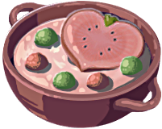

Creamy Heart Soup


"Enjoying this sweet soup with another person will bring you both closer together."
Ingredients:
- Hydromelon
- Voltfruit
- Hearty Radish
- Big Hearty Radish or Hearty Radish
- Fresh Milk
- First, extract content from watermelon and boil until bubbling.
- Next, add milk.
- Add chopped radish and voltfruit.
- Add additional seasonings as needed. Recommended are any type of plant.